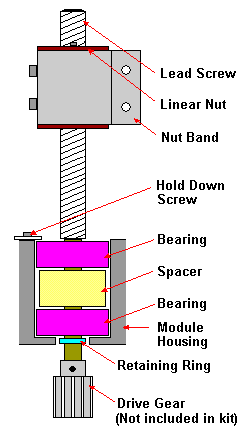

Replacing the Wash Arm Lead Screw
This procedure describes how to replace the wash arm lead screw.
Replace the lead screw when it is worn or damaged. Symptoms of damage or wear include:
- Random high results on the Washed System Check.
- Rough movement - With the motors disabled, the wash arm should move smoothly through its full range of motion.
- Looseness or wear:
- Pull upward on the wash arm, if the lead screw shaft moves upward 1/32 inch or more, then the retaining ring on the lower end of the shaft may be missing or the lower bearing may have failed.
- If the Delrin bushing is loose on the lead screw shaft, then the bushing and shaft are worn and should be replaced.
| Part Names | Reference Drawing |
|---|---|
Wash Arm Lead Screw Assembly (P/N 7266D) comes assembled and includes:
|
 |